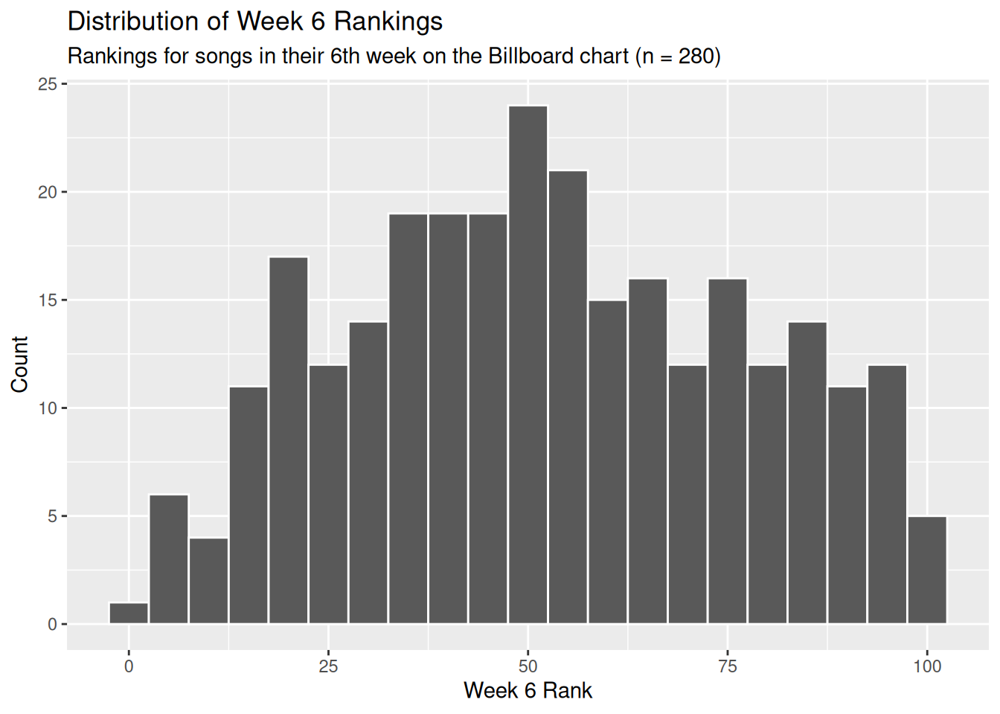
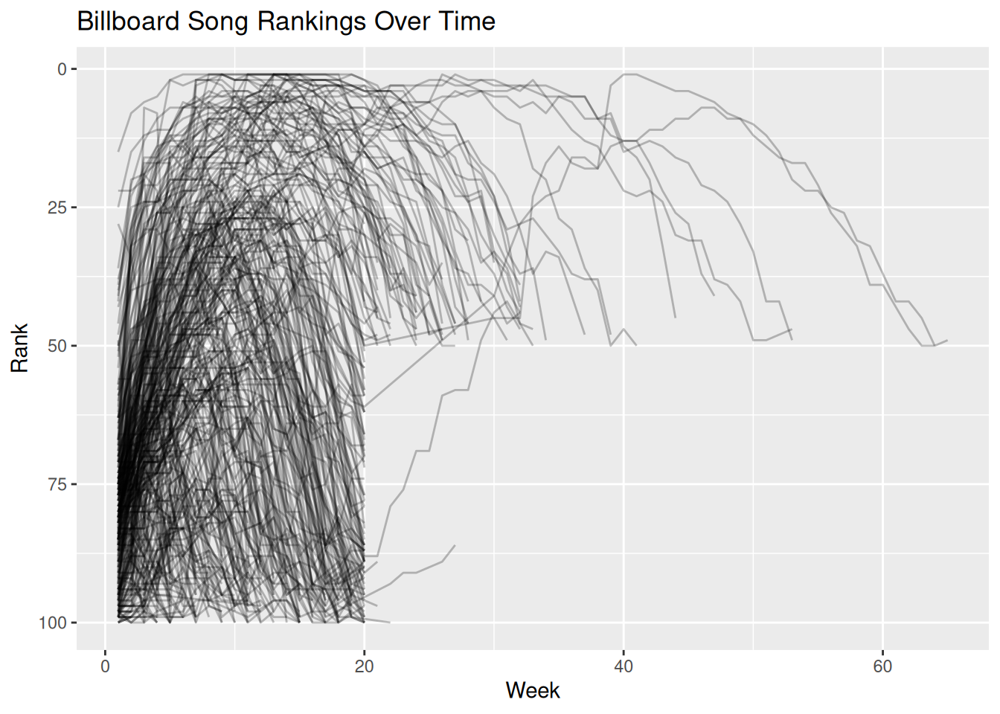
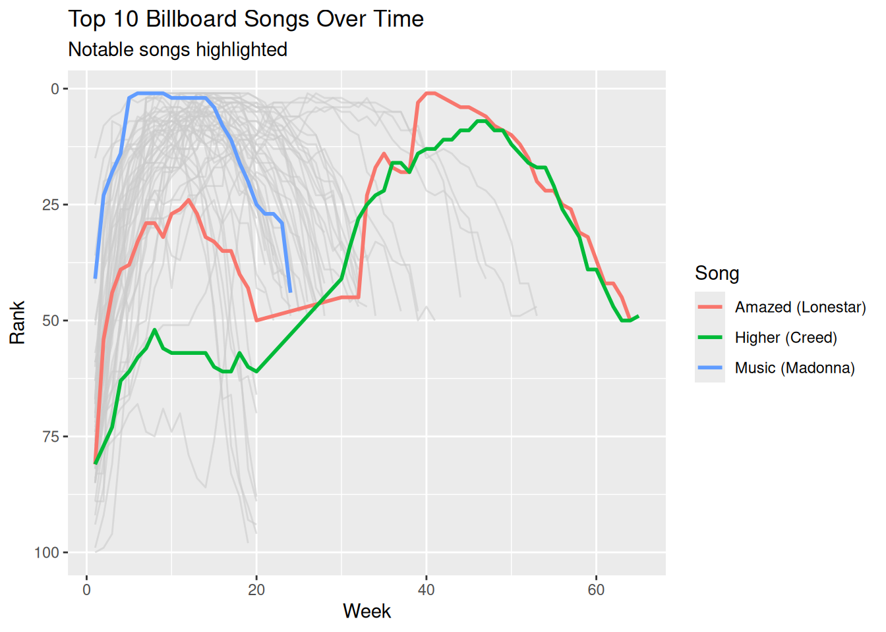
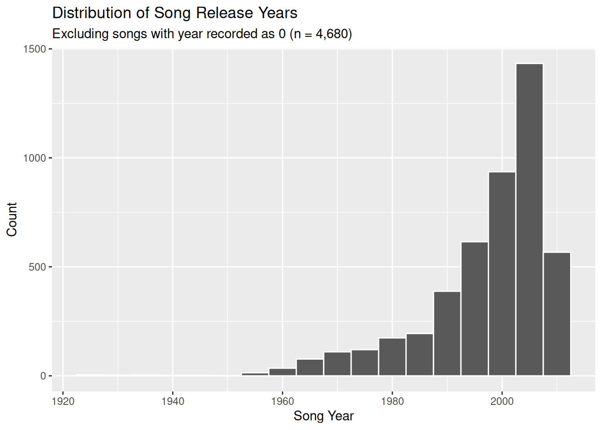

library(tidyverse)Analyzing Music Data
#| execute: echo: false
billboard |>
select(artist, track, date.entered, wk1:wk4)# A tibble: 317 × 7
artist track date.entered wk1 wk2 wk3 wk4
<chr> <chr> <date> <dbl> <dbl> <dbl> <dbl>
1 2 Pac Baby Don't Cry (Keep... 2000-02-26 87 82 72 77
2 2Ge+her The Hardest Part Of ... 2000-09-02 91 87 92 NA
3 3 Doors Down Kryptonite 2000-04-08 81 70 68 67
4 3 Doors Down Loser 2000-10-21 76 76 72 69
5 504 Boyz Wobble Wobble 2000-04-15 57 34 25 17
6 98^0 Give Me Just One Nig... 2000-08-19 51 39 34 26
7 A*Teens Dancing Queen 2000-07-08 97 97 96 95
8 Aaliyah I Don't Wanna 2000-01-29 84 62 51 41
9 Aaliyah Try Again 2000-03-18 59 53 38 28
10 Adams, Yolanda Open My Heart 2000-08-26 76 76 74 69
# ℹ 307 more rowsbillboard |>
ggplot(aes(x = wk6)) +
geom_histogram(binwidth = 5, color = "white") +
labs(
title = "Distribution of Week 6 Rankings",
subtitle = "Rankings for songs in their 6th week on the Billboard chart (n = 280)",
x = "Week 6 Rank",
y = "Count"
)Warning: Removed 37 rows containing non-finite outside the scale range
(`stat_bin()`).
billboard |>
select(wk1, wk4, wk10, wk20, wk40, wk76) |>
pivot_longer(
cols = everything(),
names_to = "week",
values_to = "rank"
) |>
summarize(
present = sum(!is.na(rank)),
missing = sum(is.na(rank)),
.by = week
)# A tibble: 6 × 3
week present missing
<chr> <int> <int>
1 wk1 317 0
2 wk4 300 17
3 wk10 244 73
4 wk20 146 171
5 wk40 7 310
6 wk76 0 317billboard |>
pivot_longer(
cols = starts_with("wk"),
names_to = "week",
values_to = "rank",
values_drop_na = TRUE
) |>
mutate(week = parse_number(week)) |>
ggplot(aes(x = week, y = rank, group = track)) +
geom_line(alpha = 0.25) +
scale_y_reverse() +
labs(
title = "Billboard Song Rankings Over Time",
x = "Week",
y = "Rank"
)
billboard |>
pivot_longer(
cols = starts_with("wk"),
names_to = "week",
values_to = "rank",
values_drop_na = TRUE
) |>
mutate(week = parse_number(week)) |>
summarize(
re_entered = any(diff(week) > 1),
.by = c(artist, track)
) |>
count(re_entered)# A tibble: 2 × 2
re_entered n
<lgl> <int>
1 FALSE 302
2 TRUE 15billboard_summary <- billboard |>
pivot_longer(
cols = starts_with("wk"),
names_to = "week",
values_to = "rank",
values_drop_na = TRUE
) |>
mutate(week = parse_number(week)) |>
arrange(week) |>
summarize(
first_rank = first(rank),
best_rank = min(rank),
first_week_at_best = week[which.min(rank)],
total_weeks = n(),
.by = c(artist, track)
)
billboard_summary# A tibble: 317 × 6
artist track first_rank best_rank first_week_at_best total_weeks
<chr> <chr> <dbl> <dbl> <dbl> <int>
1 2 Pac Baby Don'… 87 72 3 7
2 2Ge+her The Harde… 91 87 2 3
3 3 Doors Down Kryptonite 81 3 32 53
4 3 Doors Down Loser 76 55 7 20
5 504 Boyz Wobble Wo… 57 17 4 18
6 98^0 Give Me J… 51 2 7 20
7 A*Teens Dancing Q… 97 95 4 5
8 Aaliyah I Don't W… 84 35 6 20
9 Aaliyah Try Again 59 1 14 32
10 Adams, Yolanda Open My H… 76 57 9 20
# ℹ 307 more rows# Fastest to #1
billboard_summary |>
filter(best_rank == 1) |>
slice_min(first_week_at_best, n = 1)# A tibble: 1 × 6
artist track first_rank best_rank first_week_at_best total_weeks
<chr> <chr> <dbl> <dbl> <dbl> <int>
1 Madonna Music 41 1 6 24# Slowest to #1
billboard_summary |>
filter(best_rank == 1) |>
slice_max(first_week_at_best, n = 1)# A tibble: 1 × 6
artist track first_rank best_rank first_week_at_best total_weeks
<chr> <chr> <dbl> <dbl> <dbl> <int>
1 Lonestar Amazed 81 1 40 55# Top-10 song with longest chart run
billboard_summary |>
filter(best_rank <= 10) |>
slice_max(total_weeks, n = 1)# A tibble: 1 × 6
artist track first_rank best_rank first_week_at_best total_weeks
<chr> <chr> <dbl> <dbl> <dbl> <int>
1 Creed Higher 81 7 46 57top10_songs <- billboard |>
pivot_longer(
cols = starts_with("wk"),
names_to = "week",
values_to = "rank",
values_drop_na = TRUE
) |>
mutate(week = parse_number(week)) |>
filter(min(rank) <= 10, .by = c(artist, track)) |>
mutate(
notable = case_when(
artist == "Madonna" & track == "Music" ~ "Music (Madonna)",
artist == "Lonestar" & track == "Amazed" ~ "Amazed (Lonestar)",
artist == "Creed" & track == "Higher" ~ "Higher (Creed)",
.default = NA_character_
)
)
ggplot() +
geom_line(
data = filter(top10_songs, is.na(notable)),
aes(x = week, y = rank, group = track),
color = "gray80",
alpha = 0.6
) +
geom_line(
data = filter(top10_songs, !is.na(notable)),
aes(x = week, y = rank, color = notable, group = track),
linewidth = 1
) +
scale_y_reverse() +
labs(
title = "Top 10 Billboard Songs Over Time",
subtitle = "Notable songs highlighted",
x = "Week",
y = "Rank",
color = "Song"
)
music <- read_csv("data/music.csv", show_col_types = FALSE)names(music) [1] "artist.familiarity" "artist.hotttnesss"
[3] "artist.id" "artist.latitude"
[5] "artist.location" "artist.longitude"
[7] "artist.name" "artist.similar"
[9] "artist.terms" "artist.terms_freq"
[11] "release.id" "release.name"
[13] "song.artist_mbtags" "song.artist_mbtags_count"
[15] "song.bars_confidence" "song.bars_start"
[17] "song.beats_confidence" "song.beats_start"
[19] "song.duration" "song.end_of_fade_in"
[21] "song.hotttnesss" "song.id"
[23] "song.key" "song.key_confidence"
[25] "song.loudness" "song.mode"
[27] "song.mode_confidence" "song.start_of_fade_out"
[29] "song.tatums_confidence" "song.tatums_start"
[31] "song.tempo" "song.time_signature"
[33] "song.time_signature_confidence" "song.title"
[35] "song.year" music |>
select(starts_with("artist")) |>
glimpse()Rows: 10,000
Columns: 10
$ artist.familiarity <dbl> 0.58179377, 0.63063004, 0.48735679, 0.63038233, 0.6…
$ artist.hotttnesss <dbl> 0.4019975, 0.4174996, 0.3434284, 0.4542312, 0.40172…
$ artist.id <chr> "ARD7TVE1187B99BFB1", "ARMJAGH1187FB546F3", "ARKRRT…
$ artist.latitude <dbl> 0.00000, 35.14968, 0.00000, 0.00000, 0.00000, 0.000…
$ artist.location <dbl> 0, 0, 0, 0, 0, 0, 0, 0, 0, 0, 0, 0, 0, 0, 0, 0, 0, …
$ artist.longitude <dbl> 0.00000, -90.04892, 0.00000, 0.00000, 0.00000, 0.00…
$ artist.name <chr> "Casual", "The Box Tops", "Sonora Santanera", "Adam…
$ artist.similar <dbl> 0, 0, 0, 0, 0, 0, 0, 0, 0, 0, 0, 0, 0, 0, 0, 0, 0, …
$ artist.terms <chr> "hip hop", "blue-eyed soul", "salsa", "pop rock", "…
$ artist.terms_freq <dbl> 1.0000000, 1.0000000, 1.0000000, 0.9885839, 0.88728…music |>
select(
artist.name,
artist.location,
artist.latitude,
artist.longitude,
artist.terms,
artist.familiarity,
artist.hotttnesss,
song.title,
song.year
) |>
slice_head(n = 8)# A tibble: 8 × 9
artist.name artist.location artist.latitude artist.longitude artist.terms
<chr> <dbl> <dbl> <dbl> <chr>
1 Casual 0 0 0 hip hop
2 The Box Tops 0 35.1 -90.0 blue-eyed s…
3 Sonora Santanera 0 0 0 salsa
4 Adam Ant 0 0 0 pop rock
5 Gob 0 0 0 pop punk
6 Jeff And Sheri … 0 0 0 southern go…
7 Rated R 0 0 0 breakbeat
8 Tweeterfriendly… 0 0 0 post-hardco…
# ℹ 4 more variables: artist.familiarity <dbl>, artist.hotttnesss <dbl>,
# song.title <dbl>, song.year <dbl>music |>
select(artist.familiarity, artist.hotttnesss, song.year, song.tempo) |>
summary() artist.familiarity artist.hotttnesss song.year song.tempo
Min. :0.0000 Min. :0.0000 Min. : 0.0 Min. : 0.00
1st Qu.:0.4676 1st Qu.:0.3253 1st Qu.: 0.0 1st Qu.: 96.96
Median :0.5636 Median :0.3807 Median : 0.0 Median :120.16
Mean :0.5652 Mean :0.3856 Mean : 934.7 Mean :122.90
3rd Qu.:0.6680 3rd Qu.:0.4539 3rd Qu.:2000.0 3rd Qu.:144.01
Max. :1.0000 Max. :1.0825 Max. :2010.0 Max. :262.83 music |>
filter(song.year != 0) |>
ggplot(aes(x = song.year)) +
geom_histogram(binwidth = 5, color = "white") +
labs(
title = "Distribution of Song Release Years",
subtitle = "Excluding songs with year recorded as 0 (n = 4,680)",
x = "Song Year",
y = "Count"
)
music |>
summarize(
across(
c(artist.location, release.name, song.title, song.year, artist.familiarity, artist.hotttnesss),
\(x) sum(x == 0, na.rm = TRUE)
)
) |>
pivot_longer(
cols = everything(),
names_to = "variable",
values_to = "placeholder_count"
)# A tibble: 6 × 2
variable placeholder_count
<chr> <int>
1 artist.location 9999
2 release.name 9989
3 song.title 9992
4 song.year 5320
5 artist.familiarity 24
6 artist.hotttnesss 496music |>
distinct(artist.id, .keep_all = TRUE) |>
mutate(
coordinates = if_else(
artist.latitude == 0 & artist.longitude == 0,
"placeholder",
"usable"
)
) |>
count(coordinates)# A tibble: 2 × 2
coordinates n
<chr> <int>
1 placeholder 2485
2 usable 1403